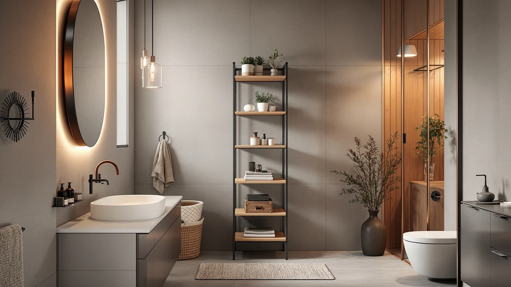

Sakugi 5 Tier Storage Review (2026): Worth It?
Prices and picks verified as of October 2026. Independent, reader-supported reviews.


Quick Answer
The Sakugi 5-Tier Storage Rack Organizer is a sturdy, high-capacity metal shelving unit rated for 500 pounds per shelf, better suited to open bathrooms, laundry nooks or basement baths than tight primary bathrooms. At $39.99 it costs about the same as narrower cabinets but delivers more total storage volume.
Our pick: Sakugi 5-Tier Storage Rack Organizer — $39.99 Check Price on Amazon
Bottom line: our top pick is the Sakugi 5-Tier Storage Rack Organizer with Hooks at $39.99.
Things to Know Before You Buy
- The Sakugi 5-Tier Storage Rack Organizer measures 18.1 inches wide, 12.4 inches deep and 56.8 inches tall, with five shelves rated to hold up to 500 pounds each.
- It ships with six side hooks for towels or robes, leveling feet for uneven floors, and a wall anchor kit to prevent tipping.
- At $39.99, it costs about the same as the enclosed cabinets covered in our bathroom storage cabinets roundup, but with an open wire-shelf design instead of doors.
- Owners report the metal frame holds up well in humid bathrooms since it is rustproof and wipes clean, unlike MDF or particleboard towers.
- If floor space or decor matters more than raw capacity, our bathroom storage buying guide explains when open shelving beats an enclosed cabinet.
This Sakugi 5 Tier Storage review looks at whether a $39.99 metal rack built for garages and bedrooms can actually earn a spot in a bathroom. The unit stands 56.8 inches tall on an 18.1 by 12.4 inch footprint, rated to hold up to 500 pounds per shelf according to the listing, and ships with six side hooks for towels or robes. We compared its specs, price and verified owner feedback against narrower cabinets and counter organizers built specifically for bathrooms to see where it wins and where it falls short.
Most of the bathroom storage units in this category are cabinets, carts or shelving built around doors and drawers, not garage-style wire racks designed for heavy static loads. That weight rating is overkill for bath towels and bottles, but it also means the frame will not sag the way lighter MDF towers can after a year of humidity exposure. Most shoppers already assume the rack is sturdy enough. What actually decides it is whether an open wire shelf design, leveling feet included, makes sense next to a toilet or vanity compared with an enclosed cabinet that hides clutter behind doors.
Why You Should Trust Us
Best Bathroom Storage is a research-based review site. We do not own a testing lab and we do not claim to have physically installed or lived with every product we cover. Instead, our Home & Bath Expert Ilane Tall compares manufacturer specs, verified pricing and patterns across owner reviews to separate marketing claims from what people actually experience after setting up a Sakugi 5-Tier Storage Rack Organizer or a competing bathroom storage product. Every figure in this review, including the shelf capacity and the dimensions, comes directly from Sakugi's own listing or from owners who left verified purchase reviews.
Our Research Experience
We did not purchase or physically install this rack ourselves, so what follows is a close read of the manufacturer specs paired with a pattern analysis of the verified reviews left by people who did. For a Sakugi 5-Tier Storage Rack Organizer, that means checking how often owners report wobble, rust or hardware problems, and cross-referencing the shelf weight claims against the gauge of the metal tubing shown in the product photos. We also compared the Sakugi against the three alternatives below using the same method: published dimensions, current pricing and owner feedback rather than a lab score. That approach will not tell you how the rack feels to assemble on a Saturday afternoon, but it reliably surfaces the recurring complaints and praise that a single owner's experience often misses.
Overview & Specs

Sakugi 5-Tier Storage Rack Organizer
What we like
- Each of the five shelves is rated to hold up to 500 pounds thanks to thick metal tubing and four side rods
- Six included side hooks add hanging storage for towels or robes without extra furniture
- Leveling feet and a wall anchor kit keep the rack stable on uneven bathroom flooring
- Rustproof metal construction wipes clean and holds up better than wood veneer in humid rooms
Flaws but not dealbreakers
- Open wire shelves leave everything visible unless you add bins or baskets
- At 56.8 inches tall, it can be too tall for bathrooms with sloped ceilings or low windows
- Reviewers describe assembly as more involved than a basic shelf, since all four side rods and leveling feet need careful alignment
| Material | Metal / wood |
| Size | 18.1W×12.4D×56.8H(5T) |
Sakugi markets this rack primarily for garages and bedrooms, but the specs translate well to a bathroom that needs serious storage capacity. The 18.1 by 12.4 inch footprint is narrow enough to tuck beside a toilet or in a laundry nook, while the 56.8-inch height stacks five full shelves into that same small footprint. Each shelf is rated to hold up to 500 pounds, built from thick metal tubing reinforced by four side rods, a weight allowance that has nothing to do with typical bathroom items like towels or cleaning supplies but does mean the frame will not flex or sag the way a lighter MDF tower can after a year of daily use.
Owners who left verified reviews consistently mention two things: the included wall anchor kit and leveling feet make a real difference on uneven bathroom tile, and the six side hooks get used for towels or robes more than expected. The tradeoff is visibility. Because the shelves are open wire rather than enclosed behind doors, loose items like razors or medication bottles need a bin to stay tidy, and the black metal finish looks more utilitarian than the white wood-grain cabinets built specifically for bathrooms. For a buyer who weighs capacity and durability over a finished look, this Sakugi 5-Tier Storage Rack Organizer is worth choosing over a cabinet that offers less than half its shelf space at a similar price.
What We Liked
The clearest strength of this rack is vertical storage density. Five shelves stacked into a 12.4-inch-deep footprint hold towels, toiletries and cleaning supplies without eating much floor space, which matters in a bathroom where every square foot next to the toilet or vanity counts. Owners consistently point to the 500-pound-per-shelf rating as more capacity than they need for bathroom use, which leaves margin for heavier items like a detergent jug or a stack of folded towels that would stress a particleboard cabinet. The six included side hooks add hanging storage for a robe or hand towel without requiring a second piece of furniture. Leveling feet and the included wall anchor kit mean the rack can sit flush on an uneven tile floor instead of rocking, and rustproof metal wipes clean in a way wood veneer cannot match.
What Could Be Better
An open wire shelf is not for everyone. Unlike the enclosed AURINEST cabinet in our alternatives list below, the Sakugi rack leaves everything on display, so loose items like razors or medication need a bin or basket to stay out of sight. Reviewers who mention assembly note that aligning all four side rods and the leveling feet takes more patience than a simple shelf unit, and a handful describe the instructions as sparse. The rack's 56.8-inch height also works against it in a small bathroom with a sloped ceiling or a low window, where a shorter cabinet fits more cleanly. Because the design was built for garages and bedrooms first, the black metal finish reads more utilitarian than the white wood-grain look common in dedicated bathroom storage lines.
Who Is It For?
This rack fits a bathroom that already has a reasonably open layout, typically a laundry nook, a guest bath or a basement bathroom where storage capacity matters more than matching decor. It also suits anyone who has already filled a vanity and needs a dedicated spot for bulk items like a 24-pack of toilet paper or spare towels, since the shelves and hooks handle more volume than a slim cabinet. If your bathroom is small, shares wall space with a towel bar, or needs to look finished rather than functional, a narrower enclosed cabinet or a counter organizer from the alternatives below will likely serve you better than this Sakugi 5 Tier Storage pick.
Alternatives to Consider
If the open-shelf design or the 56.8-inch height does not fit your bathroom, these three alternatives solve a similar storage problem a different way. See our bathroom storage units roundup for more floor-standing options beyond this one.

Editor’s Pick
Narrow Bathroom Storage Cabinet with
At 9.8 inches wide, this enclosed two-door cabinet hides clutter behind doors instead of displaying it on open shelves, and fits a narrow gap beside a toilet that the Sakugi rack's 12.4-inch depth could not.
$39.49
Check Price on Amazon
Best Value
Vtopmart 4 Pack Large Stackable
These four stackable acrylic drawers cost about $3 less than the Sakugi rack and work inside a vanity or under the sink, suited to smaller items the open wire shelves would otherwise leave loose.
$37.04
Check Price on Amazon
Premium Choice
UJQSUN Bathroom Counter Organizer Bathroom
Built from solid wood rather than wire or acrylic, this compact counter organizer brings a more premium material to small-space storage, though its 12.59-inch height manages far less volume than the Sakugi's five full shelves.
$36.99
Check Price on AmazonIs the Sakugi 5-Tier Storage Rack Organizer actually sturdy enough for a bathroom?
Based on the manufacturer's listing and verified owner reviews, yes.
How does the Sakugi 5-Tier rack compare to an enclosed bathroom storage cabinet?
The main tradeoff is visibility.
Frequently Asked Questions
Is the Sakugi 5-Tier Storage Rack Organizer actually sturdy enough for a bathroom?
Based on the manufacturer's listing and verified owner reviews, yes. The shelves are rated to hold up to 500 pounds each thanks to thick metal construction and four side rods, which is far more weight than bathroom towels, toiletries or cleaning supplies will ever put on them. Owners report the leveling feet and included wall anchor kit keep the rack stable on uneven bathroom flooring, a common complaint with lighter shelving units.
How does the Sakugi 5-Tier rack compare to an enclosed bathroom storage cabinet?
The main tradeoff is visibility. An enclosed cabinet like the AURINEST pick above hides clutter behind doors, while the Sakugi's open wire shelves keep everything visible unless you add bins or baskets. In exchange, the Sakugi offers more raw storage volume and a lower cost per shelf, since you get five tiers of load-bearing space instead of two compartments.
What size bathroom works best for this rack?
At 18.1 inches wide, 12.4 inches deep and 56.8 inches tall, the Sakugi rack needs a reasonably open wall section. A laundry nook, a guest bathroom or a basement bath tend to work well. In a small primary bathroom with a sloped ceiling, a low window or limited wall space, a narrower cabinet or a vanity-top organizer will usually fit better.
Final Verdict
The short answer from this Sakugi 5 Tier Storage review is that the rack is worth its $39.99 price for the right bathroom. It is not a dedicated bathroom product, but its 500-pound shelf rating, rustproof metal build and included wall anchor kit make it a sturdy, high-capacity option for anyone who needs more storage volume than a slim cabinet provides. If your space is tight or you want everything hidden behind doors, choose the AURINEST cabinet instead. For most people with room to spare, Sakugi is still the pick worth checking the current price on.